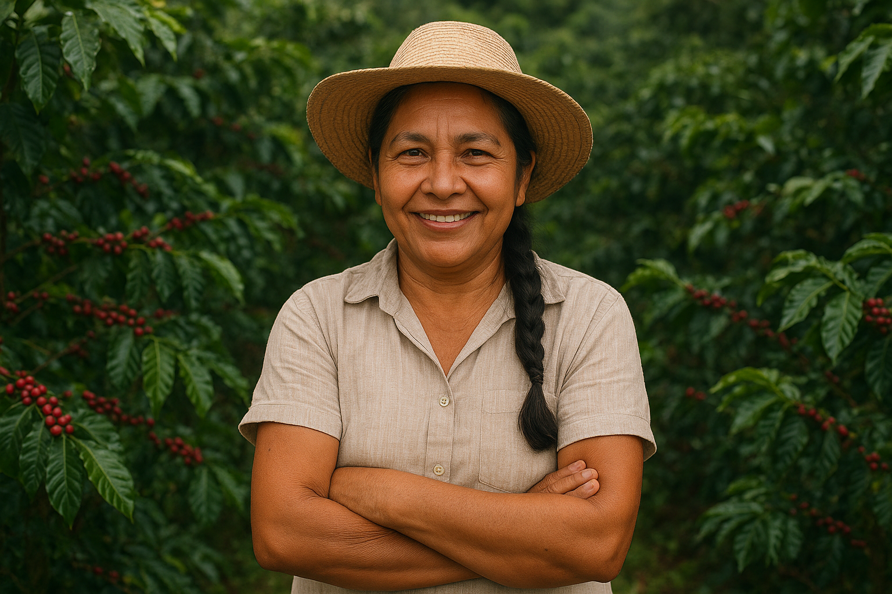
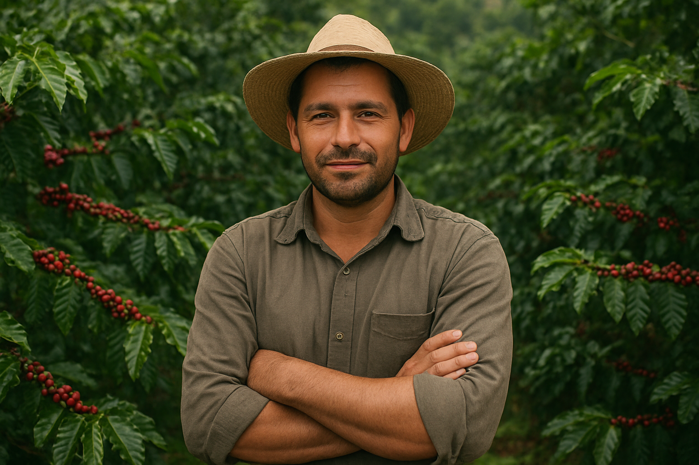

Respetamos la tierra y apoyamos prácticas sostenibles. Cada grano es cultivado sin químicos,
conservando la pureza de la naturaleza. Promovemos la biodiversidad y cuidamos los suelos fértiles de nuestras montañas.
Caficultores Locales
Trabajamos directamente con las comunidades caficultoras. Generamos oportunidades justas que fortalecen la economía rural.
Impulsamos proyectos comunitarios que transforman realidades en el campo.
Tostado Artesanal
Un proceso único que resalta los mejores aromas. Cada lote es cuidado con paciencia y experiencia heredada por generaciones.
El tostado lento y preciso garantiza una textura suave.
Así logramos un café con carácter propio.
Nuestra Historia
Crecimos en medio de montañas donde el café no era solo un cultivo,
sino parte de la vida diaria 🌄☕. Desde pequeños aprendimos que cada grano guarda el esfuerzo de familias enteras,
que se levantan antes del amanecer para cuidar la tierra con amor y paciencia.
La idea de crear La Cafetalera nació al ver que, aunque nuestro café es de los mejores del mundo,
muchas veces los caficultores no reciben el reconocimiento ni el apoyo que merecen 🌱.
Sentimos la necesidad de hacer algo diferente: darle valor a su trabajo y abrir un puente directo entre ellos y quienes disfrutan una taza cada mañana.
No somos solo una marca, somos una historia compartida 🤝.
Queremos que cada sorbo lleve consigo el aroma de nuestra tierra,
la esperanza de nuestras comunidades y el orgullo de ser colombianos 🇨🇴❤️.
✨ " Porque detrás de cada taza hay un sueño, y ese sueño sabe a café colombiano. "
Desde niño, Don José ha trabajado en el cafetal heredado de sus abuelos. Su amor por la tierra y el café lo ha llevado a mantener prácticas sostenibles...
Desde niño, Don José ha trabajado en el cafetal heredado de sus abuelos.
Su amor por la tierra y el café lo ha llevado a mantener prácticas sostenibles y enseñar a las nuevas generaciones a respetar la naturaleza y la tradición cafetera.
Con el tiempo, conoció a La Cafetalera, una plataforma que conecta directamente a pequeños productores con consumidores conscientes.
Gracias a esta iniciativa, Don José ha podido vender su café a precios justos,
recibir reconocimiento por la calidad de su producto y acceder a herramientas que lo ayudan a mejorar sus cultivos.

Doña María – Fuerza de Mujer
Doña María lidera una comunidad de caficultoras que han transformado su región.
A pesar de los desafíos y las barreras que enfrentan las mujeres en el sector agrícola...
Doña María lidera una comunidad de caficultoras que han transformado su región.
A pesar de los desafíos y las barreras que enfrentan las mujeres en el sector agrícola,
a través de esta plataforma, Doña María ha logrado que los cafés producidos por su comunidad lleguen directamente a consumidores que valoran su trabajo,
reconociendo la calidad y el esfuerzo detrás de cada grano.
Cada taza de café cuenta una historia de resiliencia, dedicación y fuerza femenina, y gracias a La Cafetalera, Doña María sabe que el impacto de su labor trasciende su región y llega a personas que aprecian y respetan su esfuerzo.

Carlos – Innovación en el Campo
Carlos siempre ha sentido un profundo respeto por las tradiciones cafetaleras de su familia, pero también una curiosidad insaciable por la innovación.
Desde joven, soñaba con mejorar los cultivos sin perder la esencia del café que lo vio crecer...
Carlos siempre ha sentido un profundo respeto por las tradiciones cafetaleras de su familia,
pero también una curiosidad insaciable por la innovación.
Desde joven, soñaba con mejorar los cultivos sin perder la esencia del café que lo vio crecer.
Hoy, gracias a La Cafetalera, ha podido combinar tradición y tecnología, implementando nuevas técnicas de riego,
control de calidad y procesamiento que elevan la excelencia de su café,
conservando los sabores auténticos que caracterizan su región.
Gracias a La Cafetalera, su esfuerzo y creatividad tienen un impacto real y reconocido, mostrando que la pasión por el café puede transformar vidas.